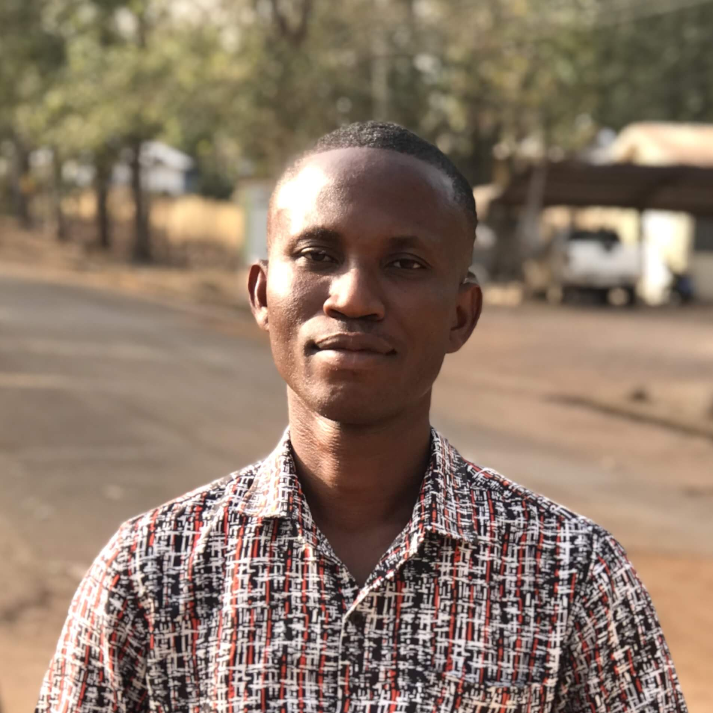

Brief About Me
I am a passionate and multifaceted individual with a deep love for teaching, mentoring children and young adults, and sharing knowledge. My dedication to guiding and inspiring others extends beyond academics into areas like preaching the Bible, which aligns with my faith and core values.
I enjoy designing and planning, bringing creativity and structure to everything I do. My enthusiasm for learning and practicing new skills fuels my constant growth, especially in the field of technology. Coding and building web software applications are key aspects of my journey, and I'm are currently advancing my expertise in web development.
Academically, I studied Electrical/Electronic Engineering at Kumasi Polytechnic before transitioning into the business world, earning an International Diploma in Business from NCC UK, facilitated by Data Link University in Tema, Ghana. I graduated with first degree from Regent University College of Science and Technology, Accra where I later worked for 6 years as a Cyber Campus Administrator responsible for managing and overseeing the digital learning platforms, and online services in the university. My primary role was to ensure that students, faculty, and staff have seamless access to online education, communication tools, and digital resources.
I continued to take some online courses in Data Analysis and Data Science and Machine Learning. I am currently working with the Civic and Local Government in the Oti Region of Ghana as an Managment Information System (MIS) officer.
Beyond academics, I have a vibrant personality with diverse interests. I enjoy watching drama and action movies, listening to and playing musical instruments, and sightseeing.
My Hobbies
- Teaching
- Sightseeing
- Playing Musical Instrument
- Watching Favorite Movies
- Listening and Singing Favourite Songs
Meet Daniel M. Ahiatrogah
Educational Background
| Institution | Qualification | Year of Completion |
|---|---|---|
| Online Certification | Data Analysis with Python | October 2020 |
| Blossom Academy | Data Analysis & Machine Learning | August 2019 |
| Ghana-India Kofi Annan Center of Excellence in ICT | Post Graduate Diploma in Advanced Computing | January 2013 |
| Regent University College of Science and Technology | BSC Computer Science | April 2011 |
| Data Link University (NCC UK) | International Diploma in Business | February 2006 |
| Kumasi Technical University | HND Electrical/Electronic Engineering | December 2002 |